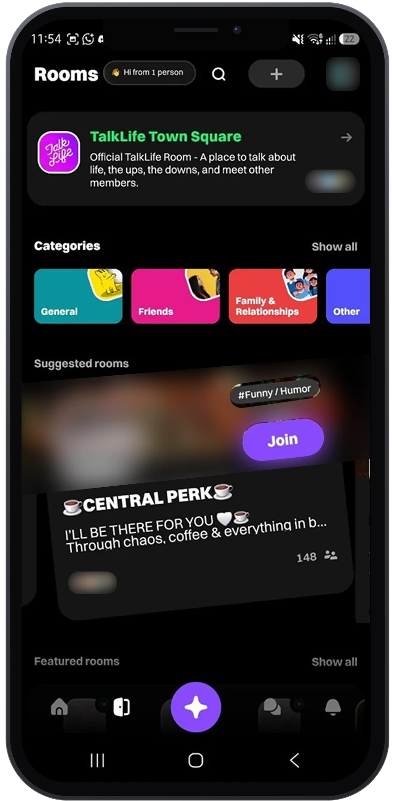

TalkLife
WebsiteAndroidiOS
- What it is
- A mutual support community: posts, private messages, group chats and responses around the clock.
- Strengths
- A “no judgement” space; someone is almost always online; strong safety and moderation tools.
- Limitations
- States itself that it is no substitute for professional help; no local migration services in its description; the iOS listing shows an English interface only.


